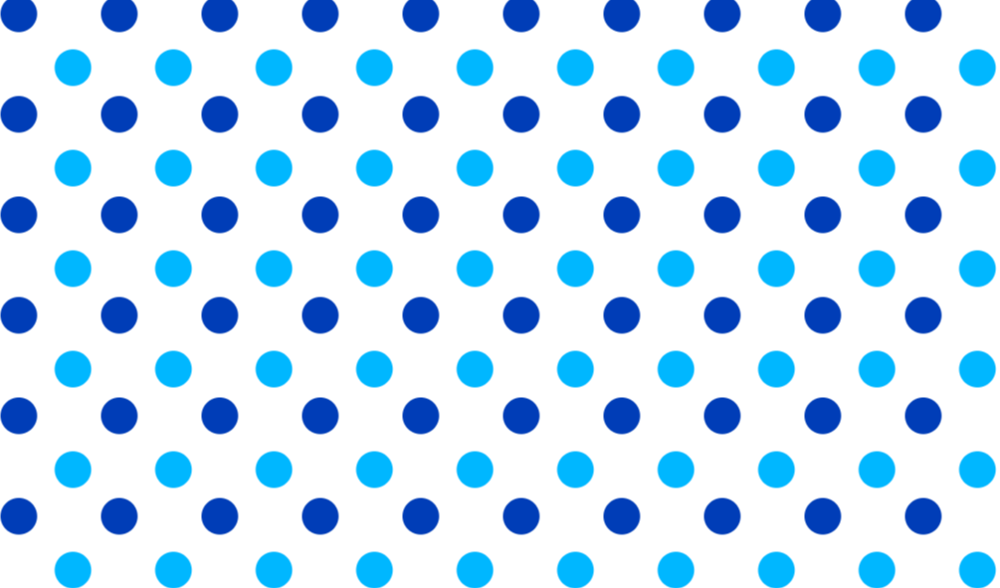

Enchance everything you do by using the latest from JotBot to solve problems, write solutions and make life easier.
Get StartedExplain some code based on the syntax provided
The following code does: